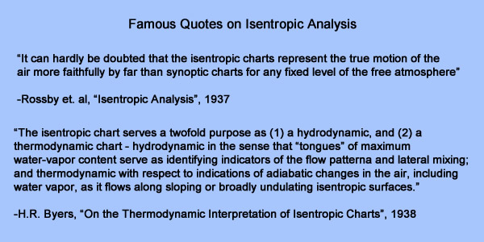

Before the switch to pressure coordinates prompted by aviation and WWII in the early 1940s, meteorologists regularly performed isentropic analysis as part of their analysis and diagnosis process. Isentropic analysis, as described by Rossby and many others, confers certain advantages in the forecasting process. Some utilities of isentropic analysis are outlined below:
This lab will focus on the first two utilities, and will link the analyzed airmasses and frontal structures to the more standard way you have viewed weather structures and features in pressure coordinates.